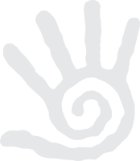
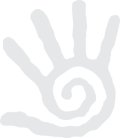

O meni
Zovem se Alek Stošić, rođen godine 1966.
U stalnoj potrazi za sobom i poslom koji će pomoći ljudima i pokrenuti ih ka nekim novim i pozitivnijim energijama - zastao sam kod Božanske Terapije: Kiropraktike. Inspiraciju sam našao u meditaciji kao jedinom preduslovu za pronalaženje ravnoteže između materijalnog i nematerijalnog sveta, kao izlazu iz svega onoga što savremenog čoveka opterećuje.
Na svom veb sajtu (web site) podelio sam sa Vama sve ono o kiropraktici što ona već jeste: problem i njegovo prevazilaženje - izlečenje.
Moje predhodno zanimanje doticalo se domen avio tehnike i njenog osposobljavanja. Između dve strasti izabrao sam pomoć čoveku.
Moja sadašnja želja je da Vam približim sve ono što je ljudskom mozgu potpuno strano ili nepoznato kao i da pronađete sebe kroz onu najtananiju vezu duhovnog (meditacije) i materijalnog - kiropraktike.
U želji da pronađete sebe, srdačno vaš Alek Stošić.
 
